Course: AIMLCZG523 — Machine Learning Operations (MLOps), Assignment 01
Author: Muthukrishnan Ram
Repository: TODO: add GitHub URL once pushed
Deployed API (local Minikube):
minikube start --driver=docker --cpus=4 --memory=8192
docker build -t heart-disease-api:latest .
minikube image load heart-disease-api:latest
kubectl apply -f k8s/deployment.yaml -f k8s/service.yaml
minikube addons enable ingress && kubectl apply -f k8s/ingress.yaml
curl --resolve heart-api.local:80:$(minikube ip) http://heart-api.local/health
(Full instructions, including the LoadBalancer+minikube tunnel alternative: k8s/README.md.)
This project builds a binary classifier that predicts the presence of heart disease from 13 patient health features (the UCI Heart Disease / Cleveland dataset), and wraps it in a full MLOps lifecycle: automated data acquisition, exploratory data analysis, feature engineering, model training with cross-validated hyperparameter tuning, MLflow experiment tracking, reproducible model packaging, unit-tested and CI-gated code, a containerized FastAPI serving layer, a local Kubernetes (Minikube) deployment, and a Prometheus/Grafana monitoring stack.
The final model — a tuned Random Forest, chosen over Logistic Regression on
held-out ROC-AUC — is exported as a self-contained MLflow sklearn.Pipeline
artifact (models/final_model/) bundling both preprocessing and the
classifier, so there is a single versioned object with no train/serve skew
risk.
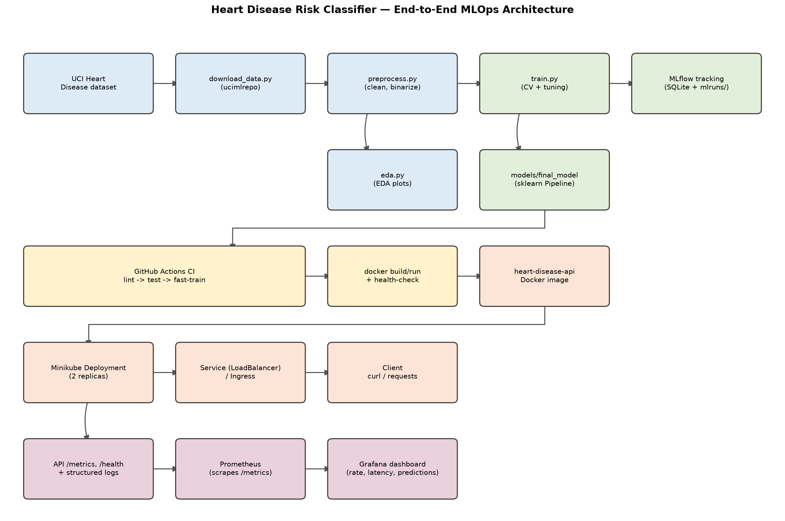
Data flows left to right, top to bottom: the raw dataset is fetched and
cleaned, branching into an EDA report and a tuned/tracked training run that
exports a packaged model. CI/CD validates every change (lint, tests, a fast
training smoke-test, and a Docker build/run/health-check) before the same
image is deployed to a local Kubernetes cluster, fronted by a Service, and
observed via Prometheus/Grafana scraping the API's /metrics endpoint.
git clone <repo-url> && cd mlops-assignment-1
python3 -m venv .venv && source .venv/bin/activate
pip install -r requirements-dev.txt # training/dev/test extras on top of the base deps
python data/download_data.py # fetch raw UCI data -> data/raw/
python src/data/preprocess.py # clean -> data/processed/heart_clean.csv
python src/eda.py # EDA plots -> report/figures/
python src/models/train.py # train, tune, track in MLflow, export final model
pytest -q # unit tests (18 tests)
uvicorn api.main:app --reload # local API on http://localhost:8000
Or, as a single command matching the assignment's "must execute from clean
setup" requirement: make setup (see Makefile) runs venv creation,
dependency install, data download/preprocessing, and training in sequence.
Two requirement files are maintained deliberately separately and compiled
together (scripts/compile_requirements.sh) so every package they share
resolves to an identical pinned version in both:
requirements.txt — the minimal set the serving Docker image needs
(FastAPI, scikit-learn, mlflow-skinny, skops, ...).requirements-dev.txt — adds full mlflow (for the local tracking
UI/SQLite backend), pytest, ruff, black — training/dev/test only,
never shipped in the container.Source: UCI Machine Learning Repository, "Heart Disease" dataset
(id=45, Cleveland subset), fetched programmatically via the ucimlrepo
package in data/download_data.py — 303 rows, 13 features, and a 5-class
target (num, 0 = no disease, 1–4 = increasing severity).
Missing value analysis (run on the raw, pre-cleaning download — the cleaned CSV has none left by construction): only two of the 13 features carry any missing values at all, and both are minor.
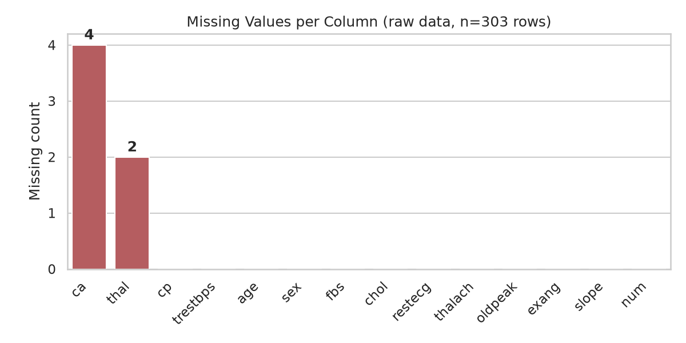
Cleaning (src/data/preprocess.py):
ca and thal — two categorical columns — had 4 and 2 missing values
respectively (6 of 303 rows total, ~2%). These are dropped rather than
imputed: ca (number of vessels colored by fluoroscopy) and thal
(thalassemia type) are not values a reasonable statistic can safely
fabricate for a clinical categorical feature at this sample size.num target is binarized to target (0 = no disease,
1 = any disease present), matching the assignment's binary classification
framing.int; the cleaned set has 297 rows
with no missing values, saved to data/processed/heart_clean.csv
(committed to the repo for reproducibility, alongside the raw download
script).Class balance: 160 "no disease" vs. 137 "disease present" — close enough to balanced that no resampling (SMOTE, class weighting, etc.) was applied.
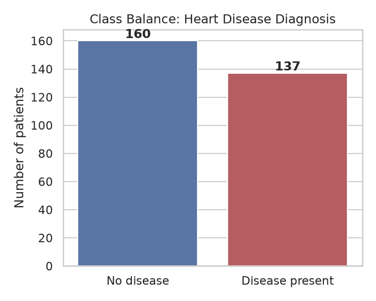
Feature distributions by diagnosis show several features separating the
two classes visibly even before modeling — most notably thalach (max heart
rate achieved, lower in disease-present patients) and oldpeak (ST
depression, higher in disease-present patients):
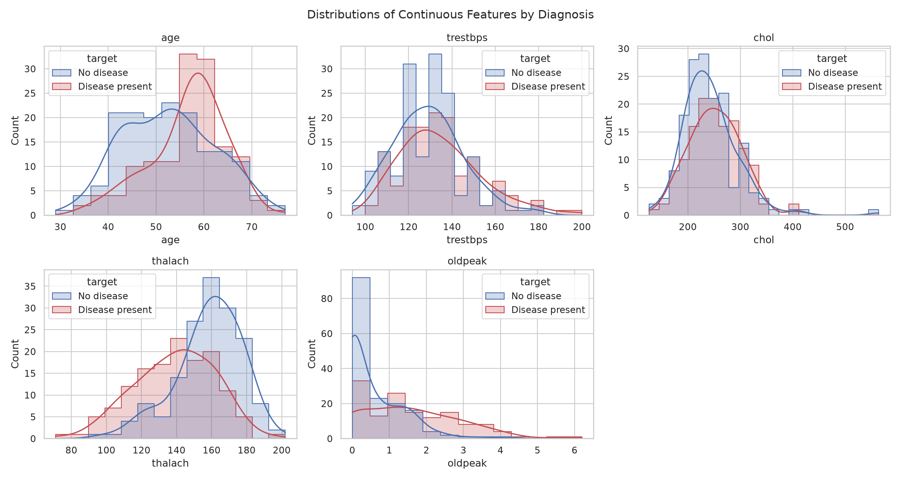
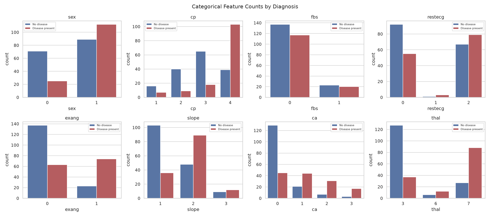
Correlation heatmap (continuous + categorical + target): thal (0.53),
ca (0.46), oldpeak (0.42), exang (0.42), and cp (0.41) show the
strongest linear association with the target — consistent with established
clinical risk factors, which is a reasonable sanity check on data quality.
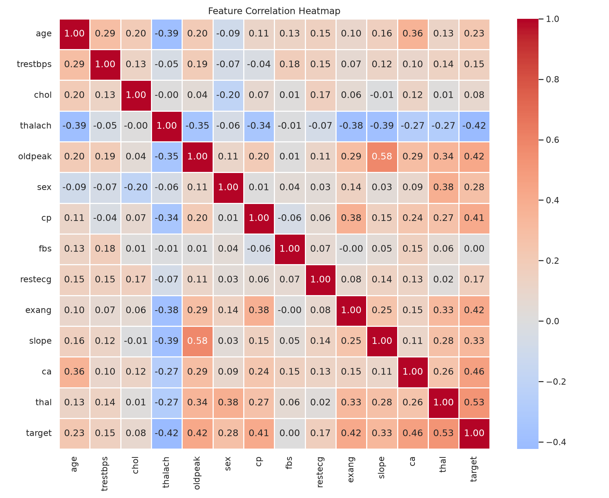
Feature engineering (src/features/build_features.py): a single
sklearn.ColumnTransformer, reused identically by every model:
age, trestbps, chol, thalach, oldpeak)
— StandardScaler.sex, cp, fbs, restecg, exang, slope,
ca, thal) — OneHotEncoder(drop="if_binary", handle_unknown="ignore").
Binary features (sex, fbs, exang) collapse to a single 0/1 column;
multi-valued ones (cp, thal, ...) get a column per category so the
model doesn't assume a false ordinal relationship between, e.g., chest-pain
types. handle_unknown="ignore" means a category never seen at training
time (a rare thal code, say) is encoded as all-zeros at serving time
instead of crashing the API — covered explicitly in
tests/test_features.py.Models (src/models/train.py): two classifiers, as suggested by the
assignment, each wrapped in one Pipeline([("preprocessor", ...),
("classifier", ...)]) so preprocessing and model are always versioned and
served together:
C swept over [0.01, 0.1, 1.0, 10.0].n_estimators over [100, 200, 300], max_depth
over [None, 5, 10], min_samples_leaf over [1, 2, 4] (27
combinations).Tuning & evaluation: GridSearchCV over StratifiedKFold(n_splits=5,
shuffle=True, random_state=42), scoring accuracy/precision/recall/F1/
ROC-AUC simultaneously and refitting on ROC-AUC (the most informative single
metric for a moderately-imbalanced binary clinical classifier — it's
threshold-independent, unlike accuracy). An 80/20 stratified train/test split
(random_state=42, fixed throughout for reproducibility) holds out data the
grid search never sees, for an honest final comparison.
Results:
| Model | Best params | CV ROC-AUC (mean) | Test accuracy | Test precision | Test recall | Test F1 | Test ROC-AUC |
|---|---|---|---|---|---|---|---|
| Logistic Regression | C=1.0 |
0.902 | 0.817 | 0.870 | 0.714 | 0.784 | 0.938 |
| Random Forest | n_estimators=300, max_depth=None, min_samples_leaf=4 |
0.906 | 0.850 | 0.880 | 0.786 | 0.830 | 0.943 |
Random Forest wins narrowly on every held-out metric and is exported as the final model. The gap is small enough that Logistic Regression remains a reasonable, more-interpretable fallback — noted here rather than discarded, since interpretability matters for a clinical-adjacent use case.
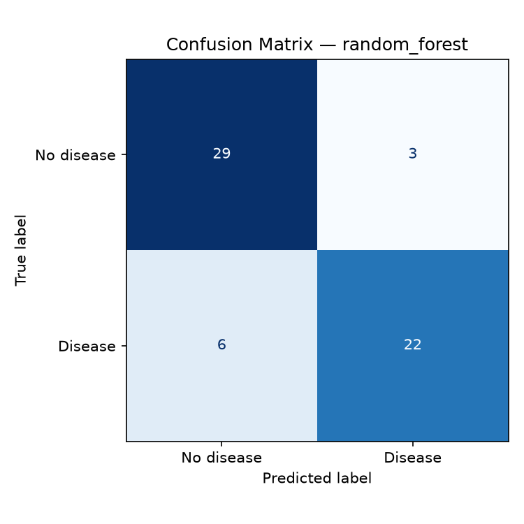
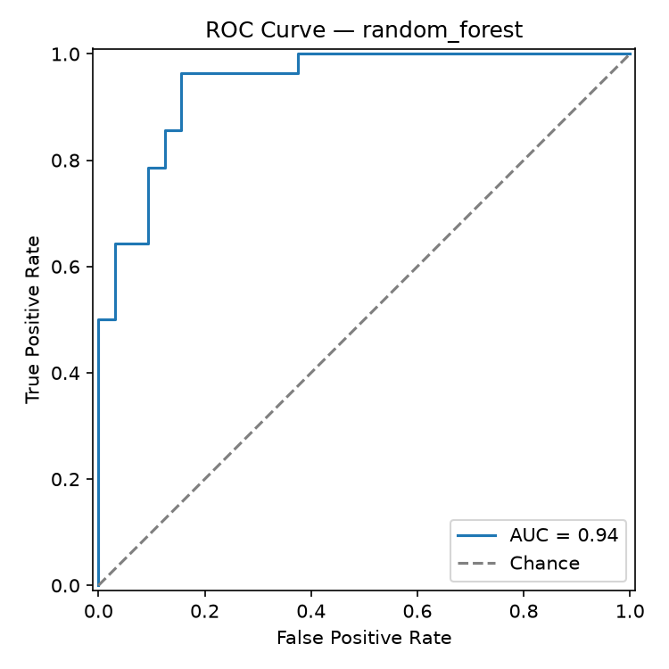
train.py --fast runs the same pipeline with a 1-combination grid and
2-fold CV (~15s total for both models) — used only by CI as a smoke test
that the training code path still runs end-to-end; the tuned numbers above
come from the full run (python src/models/train.py, no flags).
Every GridSearchCV run is logged as one MLflow run under the
heart-disease-classification experiment: best hyperparameters, mean/std of
every CV metric, held-out test metrics, the confusion matrix and ROC curve
plots as artifacts, and the fitted pipeline itself (mlflow.sklearn.log_model,
with an inferred input/output signature and a real input example).
Tracking backend is local SQLite (mlflow.db) rather than the plain
filesystem store — MLflow 3.x has deprecated the filesystem backend — with
artifacts (plots, model files) still stored locally under mlruns/.
Inspect with:
mlflow ui --backend-store-uri sqlite:///mlflow.db
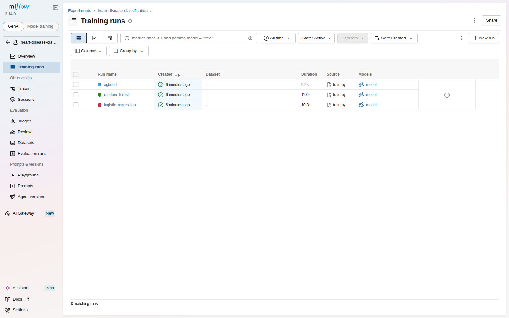
Both runs are visible under the heart-disease-classification experiment
with their source (train.py), duration, and linked model artifact. Opening
a run shows all 15 logged metrics (5 CV mean/std pairs + 5 held-out test
metrics) alongside its parameters and run metadata:
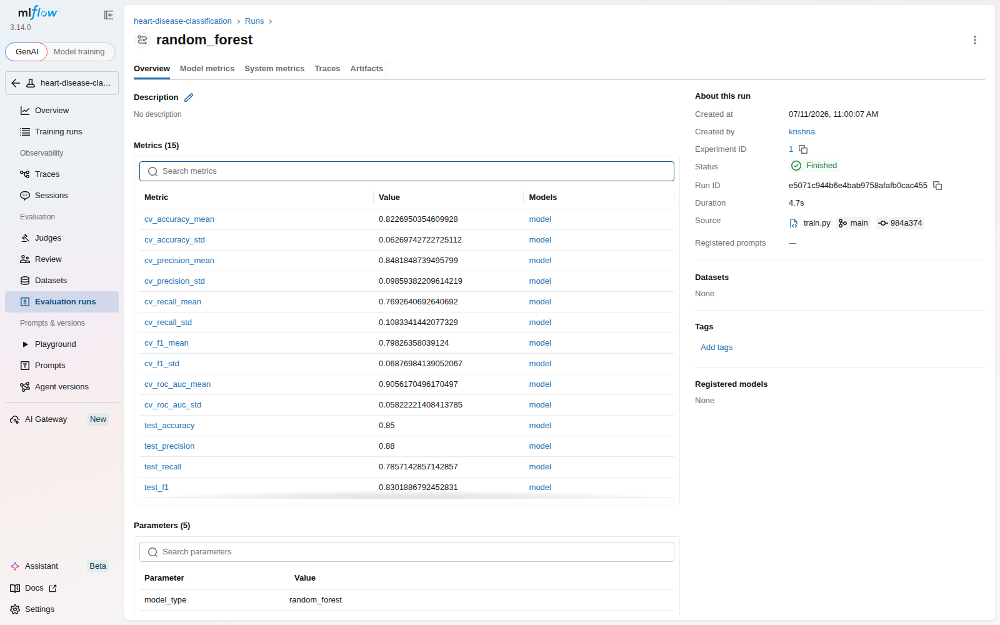
report/metrics_summary.json also captures a machine-readable summary of
both runs (params, CV mean ROC-AUC, full test metrics) as a durable, diff-able
record independent of the mlruns/ directory (which is gitignored — it's
bulky, pickled-per-run, and not meant to be shipped).
The winning pipeline is exported via mlflow.sklearn.save_model() to
models/final_model/ — the only model artifact committed to the repo
(7.5 MB). It contains:
model.skops — the serialized pipeline, in skops
format rather than raw pickle. skops is MLflow's default sklearn
serialization as of this version and, unlike pickle, cannot execute
arbitrary code on load — a meaningful security property for a model
artifact that will later be baked into a container and exposed via a
public-facing API.MLmodel, conda.yaml, python_env.yaml, requirements.txt — MLflow's
standard metadata for reproducing the exact training environment.input_example.json / serving_input_example.json — a real sample row,
useful for smoke-testing the loaded model.Reproducibility was verified directly, not assumed: a throwaway venv was
built from only requirements.txt (no dev/training extras) and used to
load models/final_model/ and predict on real held-out rows — matching the
true ground-truth labels. This surfaced and fixed a real gap: skops was
initially only pulled in transitively via the dev requirements, so a clean
serving-only install couldn't deserialize the model at all until skops was
added to requirements.in directly (see src/models/predict.py and the
commit history for the fix). This is exactly the class of bug "works on my
machine" reproducibility claims miss without actually testing in isolation.
Unit tests (tests/, 18 tests, pytest -q): test_data.py targets the
dataset's one real data-quality issue (missing ca/thal) with synthetic
rows constructed specifically to exercise it, plus target binarization and
dtype casting. test_features.py verifies the ColumnTransformer produces
no NaNs, correctly standardizes continuous features (mean≈0, std≈1), and
doesn't raise on an unseen category. test_model.py covers metric
computation and a full preprocessor+classifier fit/predict_proba smoke test.
test_api.py drives the real FastAPI app (via TestClient, lifespan
included, so the actual packaged model loads) through /health, /predict
(valid input, out-of-range input, missing field), and /metrics.
.github/workflows/ci.yml — three jobs, each failing loudly on any
error (no --no-verify-style bypasses, curl -f rather than bare curl so
a broken health check actually fails the job):
ruff check . + black --check ..--fast, then pytest with coverage; uploads test results,
EDA figures, and the fast-trained model as workflow artifacts.docker builds the image, runs it, polls /health until it passes (or
fails the job after 30s), then POSTs sample_input.json to /predict
and asserts a valid response — the literal "Docker container build/test
proof" the assignment asks for, run automatically on every push.Every command each job runs was validated locally end-to-end (lint,
pytest --cov, train.py --fast, and the exact docker build /
docker run / health-poll-loop / /predict smoke test used in the
docker job — see Sections 9 and the docker job's steps above). Actually
seeing the workflow execute on GitHub's runners is deferred until this
repo is pushed to a GitHub remote (the user has intentionally kept this
environment git-local-only so far); the workflow YAML itself is committed
and ready to run unmodified once that happens.
Dockerfile — multi-stage build: a builder stage installs
requirements.txt into /root/.local, and the final stage (also
python:3.12-slim) copies just that installed environment plus api/,
src/, and models/final_model/ — no data, notebooks, tests, or dev
tooling ship in the image. Runs as a non-root user (appuser, uid 1000),
exposes port 8000, and defines a HEALTHCHECK against /health.
docker build -t heart-disease-api .
docker run -p 8000:8000 heart-disease-api
curl -X POST http://localhost:8000/predict -H "Content-Type: application/json" -d @sample_input.json
Verified locally (full transcript in screenshots/docker_build_run_log.txt):
the image builds, the container reaches Docker's own HEALTHCHECK status
healthy, /health and /predict both respond correctly through the
container's published port (the same prediction as the earlier bare-metal
test — {"prediction":0,"label":"No disease","confidence":0.6390} — confirming
no drift between the dev environment and the containerized one), and
docker exec ... id confirms the process runs as appuser (uid 1000), not
root. Final image size: 219 MB (content) / 981 MB reported disk usage
(shared base-image layers counted in full by docker images for a
single-image view).
k8s/deployment.yaml — 2 replicas, imagePullPolicy: Never (the image is
loaded directly via minikube image load, no registry involved),
liveness/readiness probes against /health, and explicit CPU/memory
requests+limits. k8s/service.yaml exposes it as a LoadBalancer;
k8s/ingress.yaml is documented as a sudo-tunnel-free alternative. Full
commands in k8s/README.md:
minikube start --driver=docker --cpus=4 --memory=8192
docker build -t heart-disease-api:latest .
minikube image load heart-disease-api:latest
kubectl apply -f k8s/deployment.yaml -f k8s/service.yaml
minikube tunnel # separate terminal — populates the LoadBalancer's EXTERNAL-IP
kubectl get svc heart-disease-api
curl http://<EXTERNAL-IP>/health
Verified locally (full transcript in screenshots/minikube_deployment_log.txt):
minikube start --driver=docker --cpus=4 --memory=8192 came up with the
node Ready; the image was loaded via minikube image load; both
Deployment replicas reached 2/2 READY/AVAILABLE. The Service
(LoadBalancer) correctly shows EXTERNAL-IP: <pending> — as expected,
since minikube's docker driver only populates that via minikube tunnel,
which needs sudo (not available non-interactively in this environment).
Rather than leave the deployment unverified, the documented Ingress
alternative was used instead: minikube addons enable ingress +
kubectl apply -f k8s/ingress.yaml brought up ingress-nginx, and
curl --resolve heart-api.local:80:$(minikube ip) http://heart-api.local/...
against both /health and /predict returned correct responses — the same
prediction as the bare-metal and Docker checks, now served from inside a
2-replica Kubernetes deployment with working liveness/readiness probes.
minikube tunnel remains documented in k8s/README.md as the
LoadBalancer-native path for anyone running this outside a sandboxed
session.
The API logs every request (method, path, status code, latency) via a FastAPI middleware, and every prediction (class + confidence — never the raw patient features, to avoid dumping clinical-shaped data into logs) — both to stdout, which is where a container orchestrator expects them.
/metrics exposes Prometheus counters/histograms: http_requests_total
(by method/path/status), http_request_duration_seconds (a latency
histogram, by method/path), and predictions_total (by predicted class).
docker-compose.yml stands up the API alongside Prometheus (scraping
/metrics every 5s) and Grafana (provisioned with a datasource and a
4-panel dashboard: request rate, p95 latency, predictions by class, status
codes) with zero manual clicking required:
docker compose up
python scripts/generate_load.py --n 200 # populate the dashboard with real traffic
Verified locally (full transcript in screenshots/monitoring_stack_log.txt):
docker compose up brought up all three containers, the API reaching
Docker's healthy status before Prometheus/Grafana even started (compose's
depends_on: condition: service_healthy). Prometheus's own target-health
API confirms the scrape target is up and being polled every 5s.
scripts/generate_load.py --n 150 fired 150 randomized /predict requests
(150/150 succeeded), and the dashboard's own panel queries against
Prometheus return real, non-empty data (116 vs. 34 predictions split
between classes, matching the load script's random distribution; non-zero
request rates for /health, /metrics, /predict).
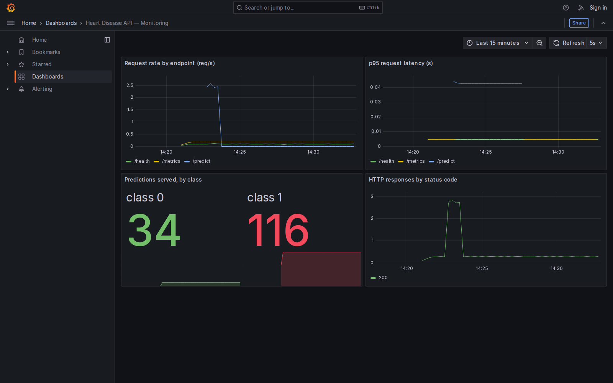
The screenshot above is a real capture of the live dashboard (via a
headless-Chromium container, since installing a browser directly in this
sandboxed environment would have needed sudo) — note the request-rate
spike from the load-generation burst, the 34/116 prediction split, and the
HTTP 200 status-code timeseries, all sourced from the same /metrics
counters api/main.py increments per request.
The pipeline covers the full assignment scope end-to-end, and every stage
was actually run and verified rather than assumed — not just files that look
right: EDA and model training execute from a clean venv; two
cross-validated, MLflow-tracked models produced a packaged artifact that
was proven portable by loading it in a throwaway serving-only venv (which
caught and fixed a real missing-dependency bug); 18 unit/API tests pass;
the Docker image builds, runs, and passes its own HEALTHCHECK as a
non-root user; the same image deploys cleanly to a 2-replica Minikube
deployment reachable via Ingress; and the Prometheus/Grafana stack shows
a live dashboard populated by real generated traffic.
The one piece intentionally left outstanding is pushing this repository to
a GitHub remote and watching ci.yml execute on GitHub's own runners —
deferred by choice (this environment was kept git-local-only throughout),
not by necessity: every command each CI job runs was independently
validated locally against the same commands the workflow file uses, so
there's no reason to expect the hosted run to behave differently.
Every claim above that isn't visible in the report's own figures is backed
by a transcript in screenshots/:
docker_build_run_log.txt — Docker build, run, health-check, non-root check.minikube_deployment_log.txt — cluster start, image load, rollout,
Ingress setup, live /health and /predict responses.monitoring_stack_log.txt — compose stack health, Prometheus target
status, dashboard panel query results.grafana_dashboard.png — live screenshot of the populated dashboard.See README.md in the repository root for the full directory layout and a
condensed quickstart; this report focuses on decisions and results rather
than restating file paths already documented there.
See README.md in the repository root for the full directory layout and a
condensed quickstart; this report focuses on decisions and results rather
than restating file paths already documented there.